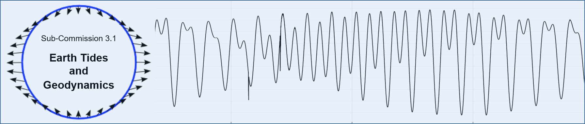

Links



List of past ETS and G-ETS
- 1957, 24-26 April, Uccle, Belgium (18 participants)
- 1958, 21-26 July, Munich, Germany (54 participants)
- 1959, 6-11 July, Trieste, Italy (56 participants)
- 1961, 5-10 June, Brussels, Belgium (54 participants)
- 1964, 1-6 June, Brussels, Belgium (59 participants)
- 1969, 15-20 September, Strasbourg, France (62 participants)
- 1973, 10-14 September, Sopron, Hungary (94 participants)
- 1977, 19-24 September, Bonn, Germany (88 participants)
- 1981, 17-22 August, NY, USA (145 participants)
- 1985, 23-27 September, Madrid, Spain (157 participants)
- 1989, 31 July-5 August, Helsinki, Finland (94 participants)
- 1993, 4-7 August, Beijin, China (80 participants)
- 1997, 22 August-1 September, Brussels, Belgium (114 participants)
- 2000, 22 August-1 September, Mizusawa, Japan
- 2004, 2-6 August, Ottawa, Canada
- 2008, 1-5 September, Jena, Germany
- 2013, 15-18 April, Warsaw, Poland (68 participants)
- 2016, 5-9 June, Trieste, Italy (105 participants)
- 2021, 23-26 June, Wuhan, China (online and onsite) (141 participants)
- 2024, 25-30 August, Strasbourg, France (86 participants)